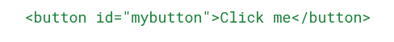
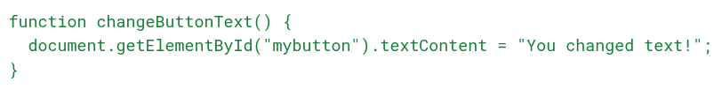
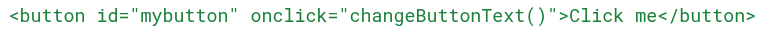
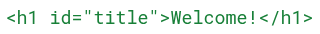
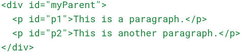
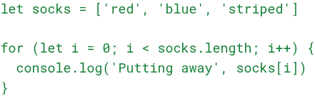
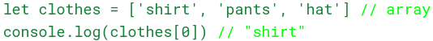
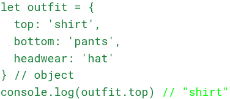
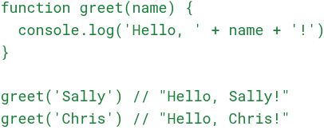

☕ What is JavaScript, and how does it fit with HTML and CSS?
Think of building a webpage like baking a cake: HTML is the
ingredients—the flour, sugar and eggs. It gives your cake (your page)
structure.
CSS is the decoration—the icing, sprinkles, and color. It makes your
cake look nice.
JavaScript is what makes your cake magical.
It lets your cake sing "Happy Birthday" or change flavor when someone
takes a bite 🍰🎶
In more technical terms:
HTML tells the browser what elements are on the page (like buttons, text and images). CSS makes those elements look nice.
JavaScript makes those elements interactive—so when you click a button, something actually happens!
Adding JavaScript to a button
Let’s say you want a button on your page that changes its text when clicked.
First, the HTML adds the button:
Then you use JavaScript to tell the button what to do when someone clicks it:

Finally, you connect the two:

Now, when someone clicks the button, JavaScript changes the text!
🗺️ What is the DOM?
The DOM (Document Object Model) is like a map of your webpage.
Just like a map shows where different buildings, roads, and landmarks
are. The DOM shows where the different parts of your webpage live,
like
headings, paragraphs, images, and links.
When your browser loads a page, it uses this map to determine what to
show and where.
JavaScript can also use this map to find locations and make changes,
like changing text, updating styles, or adding new elements.
HTML
Changing text with javascript
JavaScript uses the DOM to find the place marked "title" on the map and updates the text to say “Welcome everyone!”
🌳 What are Nodes in the DOM?
When people talk about “nodes” in JavaScript, they’re talking about
the building blocks of a webpage.
You can imagine your webpage is a family tree, where everything is a
branch (or a "node").
In the DOM every HTML element is a node, and even the text inside
those elements is a node!
HTML

JavaScript can create new nodes, add them, remove them or replace
them. Kind of like editing a recipe by adding or swapping
ingredients.
➕ Creating a New Node and Adding It
🔄 Control Flow and Loops
Like doing laundry Control flow is just the order in which your code runs, kind of like a set of instructions.
Loops let you repeat steps again and again without writing them a bunch of times.
Let’s use doing laundry as an example:
Control flow: You start by sorting clothes → washing → drying → folding
→ done.
Loop: If you have a basket full of socks, you don’t say “put away sock” a hundred times, you say “for each sock in the basket, put it away.”

This loop runs once for each sock in the drawer.
🧺 Arrays vs Objects
An array is like a sock drawer: Inside is a bunch of items in order and you grab them by number (index).
An object is like a labelled box: you grab things by name (key), like “shirt” or “hat.”

Both hold data, but they organize it differently.
🔧 What are Functions?
A function is like a reusable recipe. You give it ingredients (a parameter) and it makes something useful.
Instead of repeating code, you put it in a function and use it whenever you need it.
Functions save time and make your code easier to understand, just like using a recipe card instead of guessing each time.